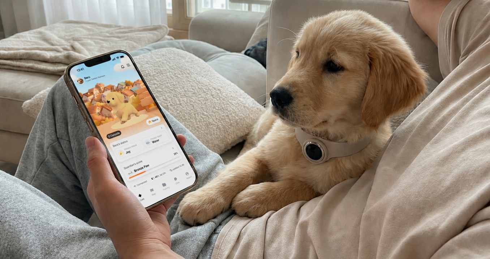
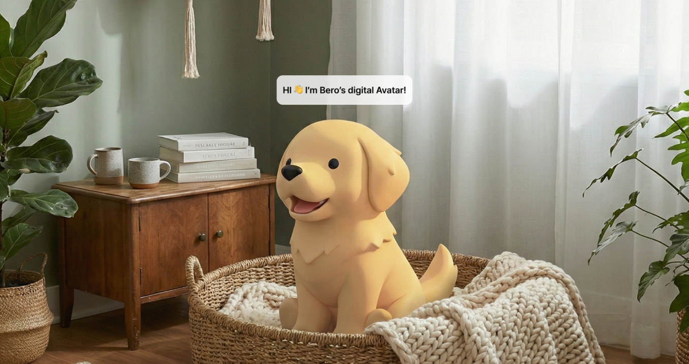
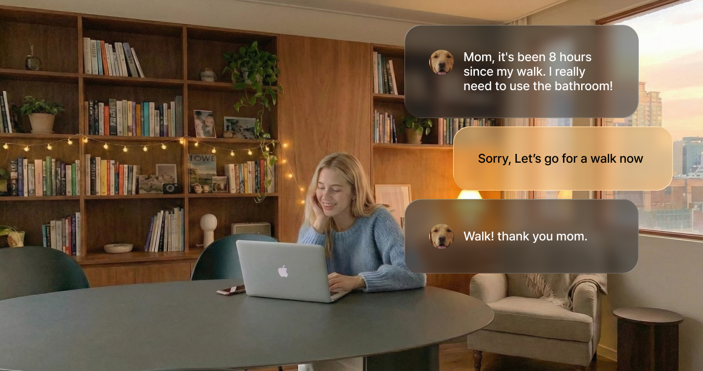
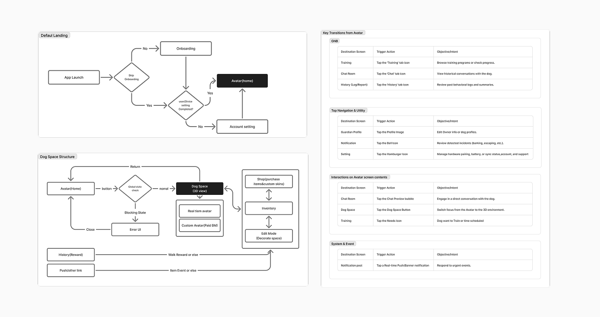
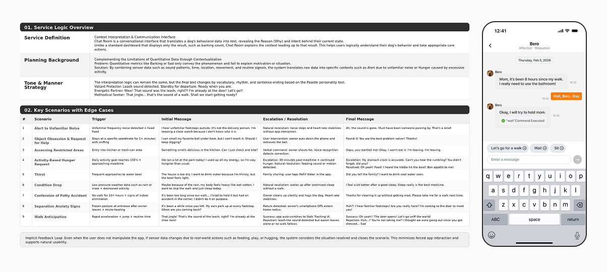
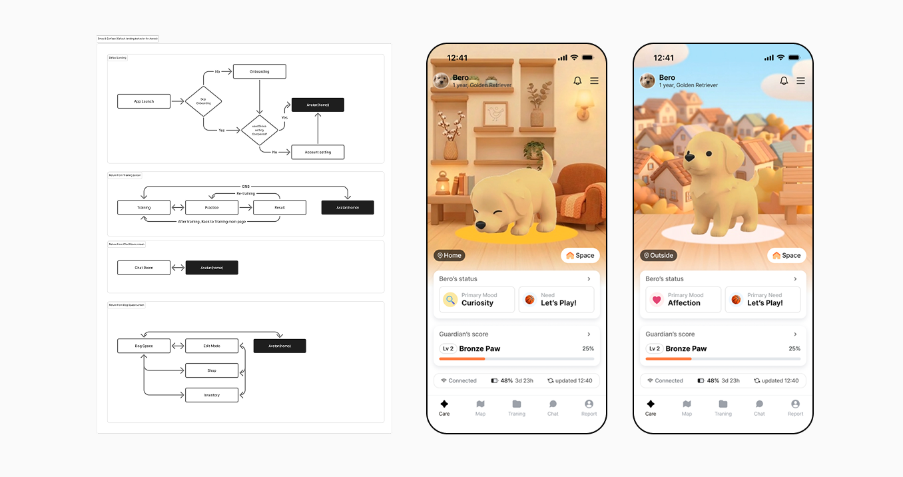
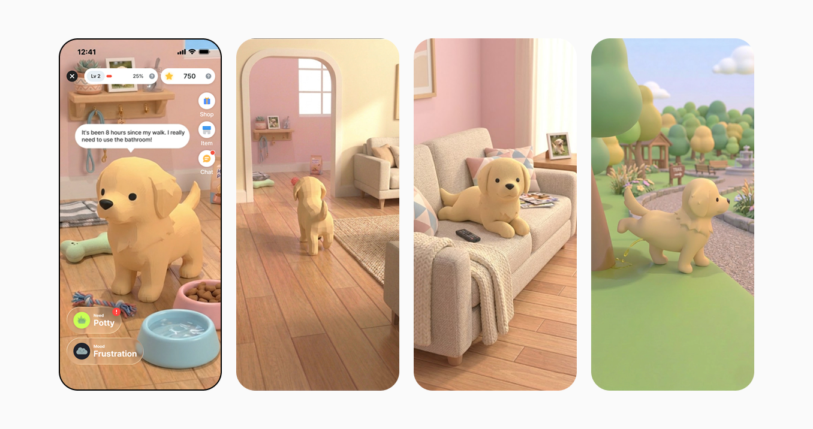
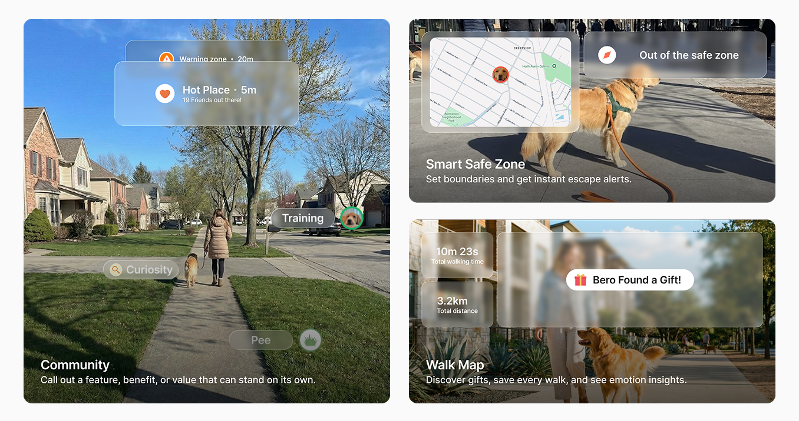
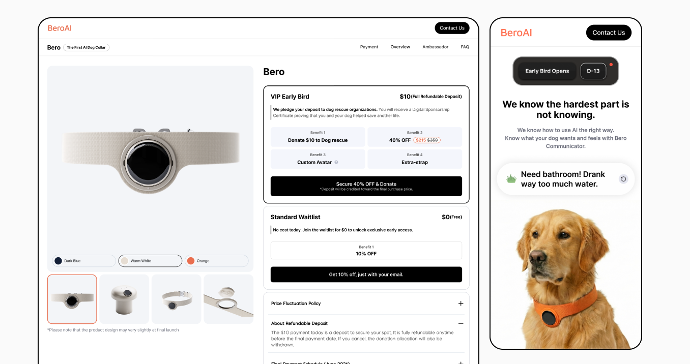

BeroAI · Bero Smart Collar · AI IoT
BeroAI · Bero Smart Collar · AI IoT
Turning smart collar data into useful, trustworthy guidance for dog owners.
BeroAI brings the collar, app, and pre-order site into one journey, helping dog owners understand what may be happening and respond with more confidence.

Overview
BeroAI is an AI IoT pet communication service built around a smart collar, mobile app, and pre-order website. The product challenge was to make collar signals understandable: what may be happening, what the owner should do, and how the service can support care over time.
My work connected product strategy, app UX/UI, AI communication logic, avatar interaction, and launch messaging into one service story.
- Reframed BeroAI from a tracking device into an AI communication service.
- Mapped categories for emotion, behavior, and needs with the AI team so interpretation could become usable product logic.
- Structured the app and pre-order funnel around Understand, Respond, and Bond loops.
| Area | Scope |
|---|---|
| Product | Bero Smart Collar — AI IoT pet communication service across smart collar, mobile app, and pre-order website |
| Role | Product Designer, Product Strategy, Service Design, UX/UI Design |
| Output | App IA and flows, mobile screen system, Emotion-Behavior-Needs mapping, scenario logic, pre-order funnel |
| Status | Pre-order site launched; mobile prototype logic defined |

Problem
The hardest part of caring for a dog is often the uncertainty of not knowing what a behavior means. Owners can see activity, camera footage, or health numbers, but they still need help understanding what those signals mean and what to do next.
BeroAI needed to explain context and care actions without overclaiming that AI can perfectly translate a dog.
| Tension | Design challenge |
|---|---|
| Raw data vs meaning | Turn barking, movement, location, and routine signals into understandable owner guidance. |
| AI promise vs trust | Communicate possibilities and context without overclaiming that AI can know everything. |
| New category vs conversion | Explain the collar, app, AI, and launch offer as one clear service. |

Role and Focus
I owned the connective layer between concept, AI logic, app experience, and launch story. Because the product was early, my focus was to define what the service should interpret, how uncertainty should be communicated, and where the owner should take action.
Research
Before designing screens, I used a Pre-PRD research questionnaire to turn the broad idea of an AI pet communicator into product decisions. I focused on owner uncertainty, dog signal taxonomy, narrative logic, privacy, reliability, and responsible engagement.
| Research area | Questions explored | How it shaped the product |
|---|---|---|
| Owner uncertainty | What owners need to know when they are away, walking, or seeing unusual behavior. | Framed BeroAI around practical care moments instead of device novelty. |
| Emotion, behavior, and needs | Which emotional states, behavior labels, needs, and conflict rules the AI should support. | Created the shared mapping for avatar states, need icons, and chat explanations. |
| Narrative and reports | How behavior, emotion, activity, and needs should become diaries, trends, and alerts. | Shifted History and Report from metric dumping to explanations of change. |
| Trust, privacy, and reliability | How to handle consent, AI data use, signal loss, confidence thresholds, and latency. | Set the rule that BeroAI should communicate context and likelihood, not certainty. |
| Care loops and engagement | What Auto Cue, scoring, rewards, and Dog Space should encourage or avoid. | Kept engagement tied to responsible care actions, not shallow gamification. |
Product Positioning
The positioning needed to be credible. Instead of promising perfect dog translation, I framed BeroAI as a service that interprets patterns, explains possible context, and helps owners respond with better timing.
| Instead of | I positioned BeroAI as |
|---|---|
| A smart collar that tracks activity | A service that turns dog behavior signals into context and care guidance. |
| An AI that "translates" dogs perfectly | An AI communicator that helps owners interpret patterns and respond with better timing. |
| A price-led launch message | A trust-led story that shows why the product matters before asking users to pre-order. |
Service Architecture
I organized the product around three loops: understand the dog's state, respond with an appropriate action, and bond through repeated care, training, and rewards.
| Layer | Purpose | Experience output |
|---|---|---|
| Smart collar | Collect behavior, motion, sound, location, and routine signals. | Raw signals and confidence limits |
| AI interpretation and mapping | Translate signal patterns into emotion, behavior, needs, and likely context. | Avatar state, need icon, chat explanation |
| Care surfaces | Make the dog's status and next action visible in the app. | Care Home, Chat Room, History |
| Action systems | Support outdoor safety, activity records, training practice, and repeat engagement. | Walk report, route insight, training journey, missions |

AI Communication UX
The Chat Room became the explanation layer. Need icons show direct states such as hunger, potty, or thirst; Chat explains context, deviation, and why a response may be useful.
Each message followed a scenario loop: trigger, interpretation, owner action, and resolution. The tone needed enough reasoning to feel credible without sounding as if the system knew the dog's exact inner state.
| Scenario | Signal pattern | Owner-facing interpretation |
|---|---|---|
| Unfamiliar noise | Unusual sound, fixed head direction, barking | The dog may be alert because of an unfamiliar sound outside. |
| Activity-based hunger | High activity, mealtime proximity, continued hunger cues | The need icon can show hunger; Chat explains why it may be happening earlier than usual. |
| Separation anxiety | Frozen posture near entrance, micro howling, owner away | The dog may be waiting anxiously and reacting to outside footsteps. |

Care Home Experience
Care Home became the app's main status surface. It answers the owner's first question: what is happening right now? The answer appears through the avatar, status cards, chat preview, and quick actions.
| Surface | UX role | Primary transition |
|---|---|---|
| Avatar status | Shows visible state, emotion, and care context without exposing raw metrics first. | Inspect status detail or quick actions. |
| Chat Preview | Surfaces the latest interpretation behind a behavior change. | Open Chat Room for history and response actions. |
| Quick Action | Lets owners respond quickly to needs such as walk, wait, stop, training, or care prompts. | Trigger an action, start a related flow, or close a resolved scenario. |
| Utility access | Keeps profile, notification, and device controls reachable without turning the home screen into a settings page. | Open dog profile, alerts, collar connection, battery, or account settings. |

Dog Space Structure
Dog Space was planned as the bonding loop. It makes the product feel playful, but keeps customization, rewards, and return paths connected to care, walking, training, and repeated visits.
| Area | Purpose | Connected flow |
|---|---|---|
| Room and avatar | Gives the dog a persistent place while reflecting recent dog context. | Enter from Care Home, History rewards, push links, or item events. |
| Customization | Supports consumables, custom skins, room items, and reward-based collection. | Items can be earned from walks, training, records, or purchased as custom assets. |
| Return and recovery | Defines how users close Dog Space, recover from blocked states, or return after an external event. | Close returns to Care Home; errors route to a clear recovery UI. |

Map and Training Systems
Map and Training gave the service an action layer: owners could move from understanding a signal to doing something useful outdoors, during practice, or in daily routines.
| System | Direction | Example features |
|---|---|---|
| Walk insight | Turn walks into behavior patterns, not just paths. | Behavior heatmap, sniff index, stress zones, walk report |
| Safety layer | Help owners understand nearby risks during outdoor activity. | Safety pins, danger alerts, privacy zone, status badge |
| Training curriculum | Structure learning from foundational commands to advanced care and behavior support. | Name recognition, recall, leash walking, socialization, alone training |

Pre-order Website and Funnel
The pre-order website needed to define a new category, answer trust questions, and collect measurable demand. I led with owner uncertainty and concrete care scenarios before moving into product details and conversion.
| Funnel layer | Design decision | Why it mattered |
|---|---|---|
| Hero and story | Lead with owner uncertainty and the value of understanding the dog. | Make the new product category emotionally legible in the first screen. |
| Lead capture | Collect email, region, optional dog profile fields, and key conversion events. | Support segmentation and measurable demand. |
| FAQ and policy | Address shipping, refunds, subscriptions, hardware fit, warranty, coverage, privacy, and support. | Reduce purchase anxiety for an early hardware and AI service. |

Launch Outcome
The project moved from concept-level UX into a structured product and launch experience. Because mature usage metrics were not available yet, I measured the outcome through product readiness.
- Defined BeroAI as an AI IoT communication service rather than a simple pet tracker.
- Built a shared Emotion-Behavior-Needs structure with the AI team.
- Designed the core app system across Care Home, Chat Room, Dog Space, Map, Training, History, and utility states.
- Launched a pre-order site with a clearer category story, lead capture, and trust-building FAQ content.
Reflection
This project reinforced that AI product design is not about making intelligence visible for its own sake. The strongest design move was connecting hardware signals, AI interpretation, app experience, and launch communication into one service that helps owners understand uncertainty and respond with care.